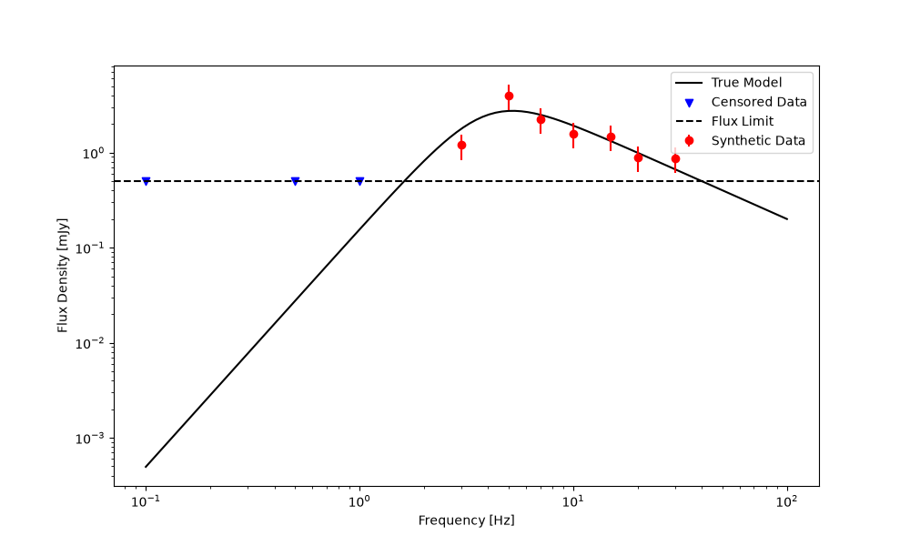
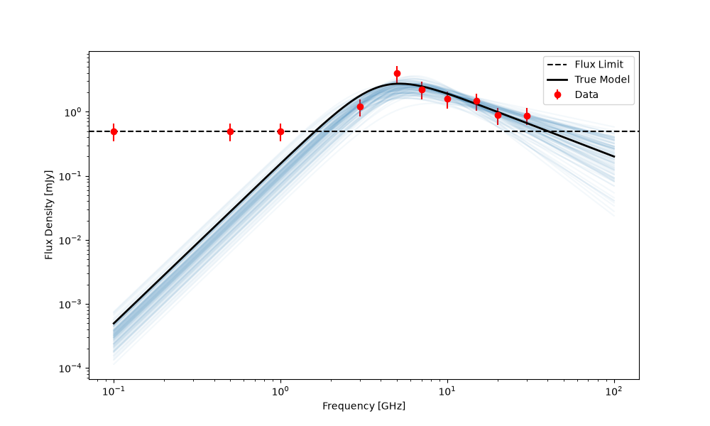
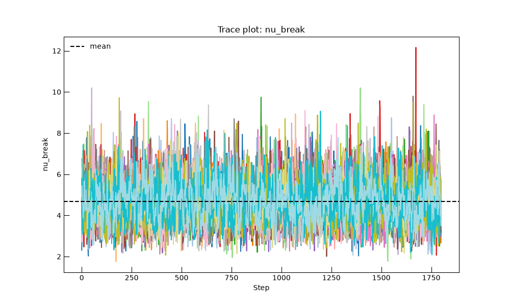
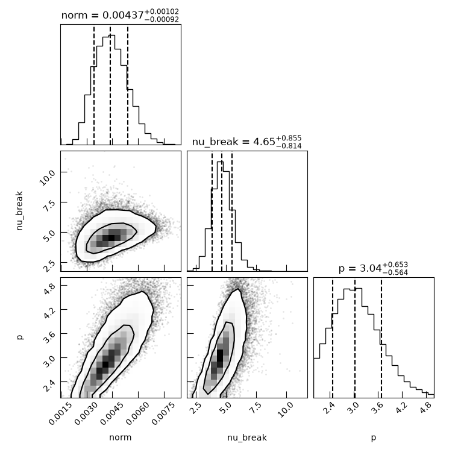

Note
Go to the end to download the full example code.
Fit Censored Radio Photometry to a BPL#
In this example, we’ll do consider the relatively simple task of fitting a single epoch of censored radio photometry data using a broken power-law (BPL) model. This is an excellent example of the robust data handling and likelihood construction of the Trilobite library.
We’ll use the Synchrotron_SSA_SBPL_SED model to generate some synthetic
data with a fixed noise threshold and then we’ll invert that data to recover the original parameters using MCMC.
This will take us through the basic steps of generating the model, defining the dataset, setting up the likelihood,
and running the inference with correct priors.
import numpy as np
from astropy import units as u
Setup#
First, we need to import the necessary libraries
from trilobite.models.SEDs.synchrotron import Synchrotron_SSA_SBPL_Model
Now, the Synchrotron_SSA_SBPL_SED model produces a synchrotron SED
with the form:
where \(F_{\nu,0}\) is the normalization at the break frequency \(\nu_{\rm break}\). The spectral indices are tied to the electron energy distribution power-law index \(p\) via
This choice reproduces the canonical optically thick and optically thin synchrotron spectral slopes expected for a homogeneous emitting region with a power-law electron population.
In order to produce the synthetic data, we’ll first define a set of model parameters and then forward model their SED with a Gaussian noise with a standard deviation proportional to the flux density.
# Generate the forward model object.
sed_model = Synchrotron_SSA_SBPL_Model()
# Create a parameter dictionary with our preferred true values.
true_params = {"norm": 5.0 * u.mJy, "nu_break": 4.0 * u.GHz, "p": 3.0, "s": -1.0}
# Define the noise level as a fraction of the flux density.
noise_fraction = 0.3 # 5% noise
# Generate the frequencies to use for the synthetic data.
frequencies = u.Quantity([0.1, 0.5, 1.0, 3.0, 5.0, 7.0, 10.0, 15.0, 20.0, 30.0], u.GHz)
# Create the fake flux limit
flux_floor = 0.5 * u.mJy
# Generate the synthetic flux densities with noise.
synthetic_flux = sed_model.forward_model({"frequency": frequencies}, true_params).flux_density
synthetic_flux += (
np.random.normal(size=synthetic_flux.shape, scale=noise_fraction * synthetic_flux.to_value("mJy")) * u.mJy
)
# Apply the flux floor to create censored data
synthetic_flux = np.where(synthetic_flux < flux_floor, flux_floor, synthetic_flux)
# create masks for the censored data
censored_mask = synthetic_flux <= flux_floor
Let’s go ahead and look at the plot of the true model and the synthetic data points.
import matplotlib.pyplot as plt
# Create a figure and axis for the plot.
fig, ax = plt.subplots(figsize=(10, 6))
# Plot the true model.
freqs_plot = np.logspace(8, 11, 100) * u.Hz
true_flux_plot = sed_model.forward_model({"frequency": freqs_plot}, true_params).flux_density
ax.plot(freqs_plot.to_value(u.GHz), true_flux_plot.to_value(u.mJy), label="True Model", color="black")
# Add our synthetic data points.
ax.errorbar(
frequencies[~censored_mask].to_value(u.GHz),
synthetic_flux[~censored_mask].to_value(u.mJy),
yerr=noise_fraction * synthetic_flux[~censored_mask].to_value(u.mJy),
fmt="o",
label="Synthetic Data",
color="red",
)
# Add censored points
ax.scatter(
frequencies[censored_mask].to_value(u.GHz),
synthetic_flux[censored_mask].to_value(u.mJy),
marker="v",
color="blue",
label="Censored Data",
)
ax.axhline(flux_floor.to_value("mJy"), color="black", ls="--", label="Flux Limit")
ax.set_xlabel("Frequency [Hz]")
ax.set_ylabel("Flux Density [mJy]")
ax.set_xscale("log")
ax.set_yscale("log")
ax.legend()
plt.show()

Inference#
Now that we have our synthetic dataset, we can set up the inference to recover the original parameters. We’ll use MCMC for this purpose, which requires us to define a likelihood function and priors for the parameters.
To start, we’ll need to create a data container object to hold our synthetic data. We’ll use
a Table object and then feed it into the
RadioPhotometryEpochContainer.
Inside of the data container, we’ll put our frequencies, flux densities, flux density errors, and upper limits. We’ll
place the detections above our flux_floor and we’ll set our upper limits to the cases where the flux density
plus noise would have fallen below that threshold.
from astropy.table import Table
from trilobite.data.photometry import RadioPhotometryEpochContainer
# Create an Astropy Table with the synthetic data. We'll have everything happen at the same
# epoch in this case (dummy time column), and we'll set the upper limits to NaN since we have detections.
data_table = Table()
data_table["freq"] = frequencies
data_table["flux_density"] = synthetic_flux
data_table["flux_density_error"] = noise_fraction * synthetic_flux
data_table["flux_upper_limit"] = np.full((frequencies.size,), np.nan) * u.mJy # No upper limits
# Swap in upper limits where appropriate
data_table["flux_upper_limit"][censored_mask] = synthetic_flux[censored_mask]
data_table["flux_density"][censored_mask] = np.nan * u.mJy
data_table["flux_density_error"][censored_mask] = flux_floor / 3 # dummy error for censored points
# Create the RadioPhotometryContainer from the table.
photometry_data = RadioPhotometryEpochContainer(data_table)
from trilobite.data import InferenceData
/home/runner/work/Trilobite/Trilobite/docs/source/galleries/inference/plot_censored_SED_fit.py:154: DeprecationWarning: RadioPhotometryEpochContainer is deprecated and will be removed in a future release. Use RadioPhotometryEpoch instead.
photometry_data = RadioPhotometryEpochContainer(data_table)
Now that we have the data container, we can set up the likelihood function. We’ll use the
GaussianCensoredLikelihood for this purpose.
This likelihood works with single-epoch photometry data and assumes Gaussian errors on the flux densities.
from trilobite.inference import GaussianCensoredLikelihood
# Create the inference data object.
inference_data = InferenceData.from_table(
sed_model,
photometry_data.table,
variables={"frequency": "freq"},
observables={
"flux_density": ("flux_density", "flux_density_error", "flux_upper_limit", None),
},
)
# Create the likelihood object.
likelihood = GaussianCensoredLikelihood(
data=inference_data,
model=sed_model,
)
# Print the current log likelihood value for the true parameters.
log_likelihood_true = likelihood.log_likelihood(true_params)
print(f"Log Likelihood at True Parameters: {log_likelihood_true}")
Log Likelihood at True Parameters: 44.70276106888139
Next, we need to define priors for the parameters we want to infer and generate an
inference problem (inference.problem.InferenceProblem). We’ll use uniform priors for simplicity.
from trilobite.inference.prior import UniformPrior
from trilobite.inference.problem import InferenceProblem
from trilobite.inference.sampling.mcmc import EmceeSampler
# Generate the inference problem
problem = InferenceProblem(
likelihood=likelihood,
)
# Set the priors for the parameters.
problem.set_prior("norm", "uniform", lower=1e-3 * u.Jy, upper=10.0 * u.Jy)
problem.set_prior("nu_break", "uniform", lower=1 * u.GHz, upper=50 * u.GHz)
problem.set_prior("p", "uniform", lower=2.0, upper=5.0)
# Fix the 's' parameter since we don't want to infer it in this example.
problem.parameters["s"].initial_value = true_params["s"]
problem.parameters["s"].freeze = True
# Create the sampler.
sampler = EmceeSampler(problem, n_walkers=32, ensemble_kwargs=dict())
# Run MCMC
result = sampler.run(10_000, progress=True)
samples = result.get_flat_samples(burn=1000, thin=10)
0% | | 🦖 0/10000 [00:00<?, ?it/s]
0% | | 🦖 18/10000 [00:00<00:58, 170.72it/s]
0% | | 🦖 37/10000 [00:00<00:56, 177.85it/s]
1% | | 🦖 55/10000 [00:00<00:56, 177.42it/s]
1% | | 🦖 73/10000 [00:00<00:55, 177.74it/s]
1% | | 🦖 92/10000 [00:00<00:55, 178.95it/s]
1% | | 🦖 111/10000 [00:00<00:54, 180.12it/s]
1% |▏ | 🦖 130/10000 [00:00<00:54, 179.98it/s]
1% |▏ | 🦖 149/10000 [00:00<00:54, 180.62it/s]
2% |▏ | 🦖 168/10000 [00:00<00:53, 182.75it/s]
2% |▏ | 🦖 187/10000 [00:01<00:53, 181.96it/s]
2% |▏ | 🦖 206/10000 [00:01<00:54, 180.21it/s]
2% |▏ | 🦖 225/10000 [00:01<00:54, 180.80it/s]
2% |▏ | 🦖 244/10000 [00:01<00:54, 180.46it/s]
3% |▎ | 🦖 263/10000 [00:01<00:54, 179.45it/s]
3% |▎ | 🦖 282/10000 [00:01<00:53, 180.42it/s]
3% |▎ | 🦖 301/10000 [00:01<00:53, 182.73it/s]
3% |▎ | 🦖 320/10000 [00:01<00:53, 182.21it/s]
3% |▎ | 🦖 339/10000 [00:01<00:52, 183.13it/s]
4% |▎ | 🦖 358/10000 [00:01<00:52, 182.82it/s]
4% |▍ | 🦖 377/10000 [00:02<00:52, 183.02it/s]
4% |▍ | 🦖 396/10000 [00:02<00:52, 184.10it/s]
4% |▍ | 🦖 415/10000 [00:02<00:52, 183.15it/s]
4% |▍ | 🦖 434/10000 [00:02<00:51, 184.01it/s]
5% |▍ | 🦖 453/10000 [00:02<00:51, 183.92it/s]
5% |▍ | 🦖 472/10000 [00:02<00:51, 183.54it/s]
5% |▍ | 🦖 491/10000 [00:02<00:51, 184.30it/s]
5% |▌ | 🦖 510/10000 [00:02<00:51, 184.77it/s]
5% |▌ | 🦖 529/10000 [00:02<00:51, 184.51it/s]
5% |▌ | 🦖 548/10000 [00:03<00:50, 185.67it/s]
6% |▌ | 🦖 567/10000 [00:03<00:51, 184.73it/s]
6% |▌ | 🦖 586/10000 [00:03<00:50, 185.88it/s]
6% |▌ | 🦖 605/10000 [00:03<00:50, 184.93it/s]
6% |▌ | 🦖 624/10000 [00:03<00:50, 184.19it/s]
6% |▋ | 🦖 643/10000 [00:03<00:50, 183.61it/s]
7% |▋ | 🦖 662/10000 [00:03<00:50, 183.37it/s]
7% |▋ | 🦖 681/10000 [00:03<00:51, 182.45it/s]
7% |▋ | 🦖 700/10000 [00:03<00:51, 181.20it/s]
7% |▋ | 🦖 719/10000 [00:03<00:51, 180.79it/s]
7% |▋ | 🦖 738/10000 [00:04<00:51, 181.40it/s]
8% |▊ | 🦖 757/10000 [00:04<00:50, 181.71it/s]
8% |▊ | 🦖 776/10000 [00:04<00:50, 181.11it/s]
8% |▊ | 🦖 795/10000 [00:04<00:50, 181.84it/s]
8% |▊ | 🦖 814/10000 [00:04<00:50, 181.57it/s]
8% |▊ | 🦖 833/10000 [00:04<00:50, 181.61it/s]
9% |▊ | 🦖 852/10000 [00:04<00:50, 181.48it/s]
9% |▊ | 🦖 871/10000 [00:04<00:50, 181.63it/s]
9% |▉ | 🦖 890/10000 [00:04<00:50, 181.93it/s]
9% |▉ | 🦖 909/10000 [00:04<00:50, 180.74it/s]
9% |▉ | 🦖 928/10000 [00:05<00:49, 181.89it/s]
9% |▉ | 🦖 947/10000 [00:05<00:49, 183.20it/s]
10% |▉ | 🦖 966/10000 [00:05<00:48, 184.85it/s]
10% |▉ | 🦖 985/10000 [00:05<00:49, 183.33it/s]
10% |█ | 🦖 1004/10000 [00:05<00:48, 184.56it/s]
10% |█ | 🦖 1024/10000 [00:05<00:48, 186.46it/s]
10% |█ | 🦖 1043/10000 [00:05<00:48, 186.09it/s]
11% |█ | 🦖 1062/10000 [00:05<00:48, 184.85it/s]
11% |█ | 🦖 1081/10000 [00:05<00:48, 184.39it/s]
11% |█ | 🦖 1100/10000 [00:06<00:48, 183.49it/s]
11% |█ | 🦖 1119/10000 [00:06<00:48, 184.31it/s]
11% |█▏ | 🦖 1138/10000 [00:06<00:48, 183.60it/s]
12% |█▏ | 🦖 1157/10000 [00:06<00:48, 183.16it/s]
12% |█▏ | 🦖 1176/10000 [00:06<00:48, 182.93it/s]
12% |█▏ | 🦖 1195/10000 [00:06<00:48, 182.49it/s]
12% |█▏ | 🦖 1214/10000 [00:06<00:48, 182.67it/s]
12% |█▏ | 🦖 1233/10000 [00:06<00:47, 183.19it/s]
13% |█▎ | 🦖 1252/10000 [00:06<00:47, 183.08it/s]
13% |█▎ | 🦖 1271/10000 [00:06<00:47, 183.57it/s]
13% |█▎ | 🦖 1290/10000 [00:07<00:47, 182.99it/s]
13% |█▎ | 🦖 1310/10000 [00:07<00:46, 185.50it/s]
13% |█▎ | 🦖 1329/10000 [00:07<00:46, 185.88it/s]
13% |█▎ | 🦖 1348/10000 [00:07<00:46, 184.98it/s]
14% |█▎ | 🦖 1367/10000 [00:07<00:47, 183.65it/s]
14% |█▍ | 🦖 1386/10000 [00:07<00:47, 183.18it/s]
14% |█▍ | 🦖 1405/10000 [00:07<00:47, 182.35it/s]
14% |█▍ | 🦖 1424/10000 [00:07<00:46, 182.89it/s]
14% |█▍ | 🦖 1443/10000 [00:07<00:46, 182.93it/s]
15% |█▍ | 🦖 1462/10000 [00:07<00:46, 183.68it/s]
15% |█▍ | 🦖 1481/10000 [00:08<00:46, 181.49it/s]
15% |█▌ | 🦖 1500/10000 [00:08<00:46, 181.08it/s]
15% |█▌ | 🦖 1519/10000 [00:08<00:46, 182.10it/s]
15% |█▌ | 🦖 1538/10000 [00:08<00:46, 181.68it/s]
16% |█▌ | 🦖 1557/10000 [00:08<00:46, 181.44it/s]
16% |█▌ | 🦖 1576/10000 [00:08<00:46, 181.28it/s]
16% |█▌ | 🦖 1595/10000 [00:08<00:46, 181.41it/s]
16% |█▌ | 🦖 1614/10000 [00:08<00:46, 182.07it/s]
16% |█▋ | 🦖 1633/10000 [00:08<00:45, 183.52it/s]
17% |█▋ | 🦖 1652/10000 [00:09<00:46, 181.16it/s]
17% |█▋ | 🦖 1671/10000 [00:09<00:46, 180.00it/s]
17% |█▋ | 🦖 1690/10000 [00:09<00:45, 181.05it/s]
17% |█▋ | 🦖 1709/10000 [00:09<00:45, 181.80it/s]
17% |█▋ | 🦖 1728/10000 [00:09<00:45, 182.85it/s]
17% |█▋ | 🦖 1747/10000 [00:09<00:45, 181.19it/s]
18% |█▊ | 🦖 1766/10000 [00:09<00:45, 181.36it/s]
18% |█▊ | 🦖 1785/10000 [00:09<00:45, 180.95it/s]
18% |█▊ | 🦖 1804/10000 [00:09<00:44, 182.23it/s]
18% |█▊ | 🦖 1823/10000 [00:09<00:44, 182.56it/s]
18% |█▊ | 🦖 1842/10000 [00:10<00:44, 182.96it/s]
19% |█▊ | 🦖 1861/10000 [00:10<00:44, 183.66it/s]
19% |█▉ | 🦖 1880/10000 [00:10<00:44, 184.01it/s]
19% |█▉ | 🦖 1899/10000 [00:10<00:43, 184.31it/s]
19% |█▉ | 🦖 1918/10000 [00:10<00:44, 183.47it/s]
19% |█▉ | 🦖 1937/10000 [00:10<00:44, 182.78it/s]
20% |█▉ | 🦖 1956/10000 [00:10<00:43, 183.81it/s]
20% |█▉ | 🦖 1975/10000 [00:10<00:43, 183.44it/s]
20% |█▉ | 🦖 1995/10000 [00:10<00:43, 185.24it/s]
20% |██ | 🦖 2014/10000 [00:11<00:42, 186.27it/s]
20% |██ | 🦖 2033/10000 [00:11<00:42, 186.40it/s]
21% |██ | 🦖 2052/10000 [00:11<00:42, 185.66it/s]
21% |██ | 🦖 2071/10000 [00:11<00:42, 184.68it/s]
21% |██ | 🦖 2090/10000 [00:11<00:42, 185.28it/s]
21% |██ | 🦖 2109/10000 [00:11<00:42, 185.66it/s]
21% |██▏ | 🦖 2128/10000 [00:11<00:42, 184.39it/s]
21% |██▏ | 🦖 2147/10000 [00:11<00:42, 184.34it/s]
22% |██▏ | 🦖 2166/10000 [00:11<00:42, 182.57it/s]
22% |██▏ | 🦖 2185/10000 [00:11<00:42, 183.56it/s]
22% |██▏ | 🦖 2204/10000 [00:12<00:42, 182.78it/s]
22% |██▏ | 🦖 2223/10000 [00:12<00:42, 182.79it/s]
22% |██▏ | 🦖 2242/10000 [00:12<00:42, 183.54it/s]
23% |██▎ | 🦖 2261/10000 [00:12<00:42, 183.99it/s]
23% |██▎ | 🦖 2280/10000 [00:12<00:42, 183.09it/s]
23% |██▎ | 🦖 2299/10000 [00:12<00:42, 182.48it/s]
23% |██▎ | 🦖 2318/10000 [00:12<00:42, 182.52it/s]
23% |██▎ | 🦖 2337/10000 [00:12<00:41, 182.81it/s]
24% |██▎ | 🦖 2356/10000 [00:12<00:41, 183.28it/s]
24% |██▍ | 🦖 2375/10000 [00:12<00:41, 184.55it/s]
24% |██▍ | 🦖 2394/10000 [00:13<00:41, 181.42it/s]
24% |██▍ | 🦖 2413/10000 [00:13<00:41, 181.75it/s]
24% |██▍ | 🦖 2432/10000 [00:13<00:41, 181.78it/s]
25% |██▍ | 🦖 2451/10000 [00:13<00:41, 182.71it/s]
25% |██▍ | 🦖 2470/10000 [00:13<00:40, 183.74it/s]
25% |██▍ | 🦖 2489/10000 [00:13<00:40, 185.04it/s]
25% |██▌ | 🦖 2508/10000 [00:13<00:40, 185.59it/s]
25% |██▌ | 🦖 2527/10000 [00:13<00:40, 184.06it/s]
25% |██▌ | 🦖 2546/10000 [00:13<00:40, 184.77it/s]
26% |██▌ | 🦖 2565/10000 [00:14<00:40, 183.46it/s]
26% |██▌ | 🦖 2584/10000 [00:14<00:40, 184.27it/s]
26% |██▌ | 🦖 2603/10000 [00:14<00:40, 183.91it/s]
26% |██▌ | 🦖 2622/10000 [00:14<00:40, 182.44it/s]
26% |██▋ | 🦖 2641/10000 [00:14<00:40, 182.41it/s]
27% |██▋ | 🦖 2660/10000 [00:14<00:39, 183.84it/s]
27% |██▋ | 🦖 2679/10000 [00:14<00:39, 184.12it/s]
27% |██▋ | 🦖 2698/10000 [00:14<00:39, 185.12it/s]
27% |██▋ | 🦖 2717/10000 [00:14<00:39, 185.16it/s]
27% |██▋ | 🦖 2736/10000 [00:14<00:39, 183.61it/s]
28% |██▊ | 🦖 2755/10000 [00:15<00:39, 185.25it/s]
28% |██▊ | 🦖 2774/10000 [00:15<00:39, 184.77it/s]
28% |██▊ | 🦖 2793/10000 [00:15<00:39, 184.51it/s]
28% |██▊ | 🦖 2812/10000 [00:15<00:39, 183.18it/s]
28% |██▊ | 🦖 2831/10000 [00:15<00:39, 182.06it/s]
28% |██▊ | 🦖 2850/10000 [00:15<00:39, 182.00it/s]
29% |██▊ | 🦖 2869/10000 [00:15<00:38, 183.03it/s]
29% |██▉ | 🦖 2888/10000 [00:15<00:39, 181.73it/s]
29% |██▉ | 🦖 2907/10000 [00:15<00:38, 182.23it/s]
29% |██▉ | 🦖 2926/10000 [00:15<00:38, 184.25it/s]
29% |██▉ | 🦖 2945/10000 [00:16<00:38, 184.33it/s]
30% |██▉ | 🦖 2964/10000 [00:16<00:38, 183.90it/s]
30% |██▉ | 🦖 2983/10000 [00:16<00:38, 182.76it/s]
30% |███ | 🦖 3002/10000 [00:16<00:38, 184.05it/s]
30% |███ | 🦖 3021/10000 [00:16<00:37, 184.43it/s]
30% |███ | 🦖 3041/10000 [00:16<00:37, 186.43it/s]
31% |███ | 🦖 3060/10000 [00:16<00:37, 186.06it/s]
31% |███ | 🦖 3079/10000 [00:16<00:37, 184.60it/s]
31% |███ | 🦖 3098/10000 [00:16<00:37, 184.99it/s]
31% |███ | 🦖 3117/10000 [00:17<00:37, 184.22it/s]
31% |███▏ | 🦖 3136/10000 [00:17<00:37, 183.85it/s]
32% |███▏ | 🦖 3155/10000 [00:17<00:37, 183.15it/s]
32% |███▏ | 🦖 3174/10000 [00:17<00:37, 182.72it/s]
32% |███▏ | 🦖 3193/10000 [00:17<00:37, 181.06it/s]
32% |███▏ | 🦖 3212/10000 [00:17<00:37, 179.18it/s]
32% |███▏ | 🦖 3230/10000 [00:17<00:38, 177.95it/s]
32% |███▏ | 🦖 3248/10000 [00:17<00:37, 177.87it/s]
33% |███▎ | 🦖 3266/10000 [00:17<00:37, 177.99it/s]
33% |███▎ | 🦖 3285/10000 [00:17<00:37, 179.33it/s]
33% |███▎ | 🦖 3303/10000 [00:18<00:37, 178.61it/s]
33% |███▎ | 🦖 3321/10000 [00:18<00:37, 177.75it/s]
33% |███▎ | 🦖 3340/10000 [00:18<00:36, 180.05it/s]
34% |███▎ | 🦖 3359/10000 [00:18<00:36, 181.47it/s]
34% |███▍ | 🦖 3378/10000 [00:18<00:36, 180.99it/s]
34% |███▍ | 🦖 3397/10000 [00:18<00:36, 179.20it/s]
34% |███▍ | 🦖 3415/10000 [00:18<00:36, 178.90it/s]
34% |███▍ | 🦖 3433/10000 [00:18<00:36, 178.28it/s]
35% |███▍ | 🦖 3452/10000 [00:18<00:36, 179.66it/s]
35% |███▍ | 🦖 3471/10000 [00:18<00:36, 180.94it/s]
35% |███▍ | 🦖 3490/10000 [00:19<00:35, 182.63it/s]
35% |███▌ | 🦖 3509/10000 [00:19<00:35, 183.04it/s]
35% |███▌ | 🦖 3528/10000 [00:19<00:35, 184.00it/s]
35% |███▌ | 🦖 3547/10000 [00:19<00:34, 185.34it/s]
36% |███▌ | 🦖 3566/10000 [00:19<00:34, 184.26it/s]
36% |███▌ | 🦖 3585/10000 [00:19<00:34, 183.73it/s]
36% |███▌ | 🦖 3604/10000 [00:19<00:34, 184.11it/s]
36% |███▌ | 🦖 3623/10000 [00:19<00:34, 182.57it/s]
36% |███▋ | 🦖 3642/10000 [00:19<00:34, 182.53it/s]
37% |███▋ | 🦖 3661/10000 [00:20<00:34, 181.59it/s]
37% |███▋ | 🦖 3680/10000 [00:20<00:34, 182.72it/s]
37% |███▋ | 🦖 3699/10000 [00:20<00:34, 183.85it/s]
37% |███▋ | 🦖 3718/10000 [00:20<00:34, 184.10it/s]
37% |███▋ | 🦖 3737/10000 [00:20<00:34, 182.10it/s]
38% |███▊ | 🦖 3756/10000 [00:20<00:34, 181.45it/s]
38% |███▊ | 🦖 3775/10000 [00:20<00:34, 181.73it/s]
38% |███▊ | 🦖 3794/10000 [00:20<00:34, 181.97it/s]
38% |███▊ | 🦖 3813/10000 [00:20<00:33, 183.34it/s]
38% |███▊ | 🦖 3832/10000 [00:20<00:33, 184.34it/s]
39% |███▊ | 🦖 3851/10000 [00:21<00:33, 184.86it/s]
39% |███▊ | 🦖 3870/10000 [00:21<00:33, 184.66it/s]
39% |███▉ | 🦖 3889/10000 [00:21<00:32, 185.42it/s]
39% |███▉ | 🦖 3908/10000 [00:21<00:32, 185.45it/s]
39% |███▉ | 🦖 3927/10000 [00:21<00:32, 185.20it/s]
39% |███▉ | 🦖 3946/10000 [00:21<00:32, 184.75it/s]
40% |███▉ | 🦖 3965/10000 [00:21<00:32, 184.17it/s]
40% |███▉ | 🦖 3984/10000 [00:21<00:32, 183.31it/s]
40% |████ | 🦖 4003/10000 [00:21<00:32, 182.45it/s]
40% |████ | 🦖 4022/10000 [00:21<00:32, 182.14it/s]
40% |████ | 🦖 4041/10000 [00:22<00:32, 182.70it/s]
41% |████ | 🦖 4060/10000 [00:22<00:32, 183.20it/s]
41% |████ | 🦖 4079/10000 [00:22<00:32, 184.45it/s]
41% |████ | 🦖 4098/10000 [00:22<00:31, 185.05it/s]
41% |████ | 🦖 4118/10000 [00:22<00:31, 188.84it/s]
41% |████▏ | 🦖 4137/10000 [00:22<00:31, 186.99it/s]
42% |████▏ | 🦖 4156/10000 [00:22<00:31, 186.27it/s]
42% |████▏ | 🦖 4175/10000 [00:22<00:31, 185.55it/s]
42% |████▏ | 🦖 4194/10000 [00:22<00:31, 185.57it/s]
42% |████▏ | 🦖 4213/10000 [00:23<00:31, 184.47it/s]
42% |████▏ | 🦖 4232/10000 [00:23<00:31, 183.42it/s]
43% |████▎ | 🦖 4251/10000 [00:23<00:31, 183.91it/s]
43% |████▎ | 🦖 4270/10000 [00:23<00:31, 183.75it/s]
43% |████▎ | 🦖 4289/10000 [00:23<00:31, 184.01it/s]
43% |████▎ | 🦖 4309/10000 [00:23<00:30, 186.02it/s]
43% |████▎ | 🦖 4328/10000 [00:23<00:30, 185.16it/s]
43% |████▎ | 🦖 4347/10000 [00:23<00:30, 184.22it/s]
44% |████▎ | 🦖 4366/10000 [00:23<00:30, 182.43it/s]
44% |████▍ | 🦖 4385/10000 [00:23<00:30, 182.05it/s]
44% |████▍ | 🦖 4404/10000 [00:24<00:31, 180.27it/s]
44% |████▍ | 🦖 4423/10000 [00:24<00:30, 182.06it/s]
44% |████▍ | 🦖 4442/10000 [00:24<00:30, 181.92it/s]
45% |████▍ | 🦖 4461/10000 [00:24<00:30, 180.96it/s]
45% |████▍ | 🦖 4480/10000 [00:24<00:30, 181.81it/s]
45% |████▍ | 🦖 4499/10000 [00:24<00:30, 182.86it/s]
45% |████▌ | 🦖 4518/10000 [00:24<00:29, 183.23it/s]
45% |████▌ | 🦖 4537/10000 [00:24<00:29, 184.13it/s]
46% |████▌ | 🦖 4556/10000 [00:24<00:29, 183.72it/s]
46% |████▌ | 🦖 4575/10000 [00:25<00:29, 181.98it/s]
46% |████▌ | 🦖 4594/10000 [00:25<00:29, 181.52it/s]
46% |████▌ | 🦖 4613/10000 [00:25<00:29, 183.57it/s]
46% |████▋ | 🦖 4632/10000 [00:25<00:29, 182.84it/s]
47% |████▋ | 🦖 4651/10000 [00:25<00:29, 182.90it/s]
47% |████▋ | 🦖 4670/10000 [00:25<00:29, 182.09it/s]
47% |████▋ | 🦖 4689/10000 [00:25<00:28, 183.15it/s]
47% |████▋ | 🦖 4708/10000 [00:25<00:28, 182.76it/s]
47% |████▋ | 🦖 4727/10000 [00:25<00:28, 181.95it/s]
47% |████▋ | 🦖 4746/10000 [00:25<00:28, 182.98it/s]
48% |████▊ | 🦖 4765/10000 [00:26<00:28, 184.34it/s]
48% |████▊ | 🦖 4784/10000 [00:26<00:28, 184.49it/s]
48% |████▊ | 🦖 4803/10000 [00:26<00:28, 181.28it/s]
48% |████▊ | 🦖 4822/10000 [00:26<00:28, 180.06it/s]
48% |████▊ | 🦖 4841/10000 [00:26<00:28, 179.19it/s]
49% |████▊ | 🦖 4859/10000 [00:26<00:28, 179.23it/s]
49% |████▉ | 🦖 4878/10000 [00:26<00:28, 180.40it/s]
49% |████▉ | 🦖 4897/10000 [00:26<00:28, 181.16it/s]
49% |████▉ | 🦖 4916/10000 [00:26<00:28, 180.35it/s]
49% |████▉ | 🦖 4935/10000 [00:26<00:27, 181.07it/s]
50% |████▉ | 🦖 4954/10000 [00:27<00:28, 180.09it/s]
50% |████▉ | 🦖 4973/10000 [00:27<00:27, 180.25it/s]
50% |████▉ | 🦖 4992/10000 [00:27<00:27, 181.60it/s]
50% |█████ | 🦖 5011/10000 [00:27<00:27, 181.24it/s]
50% |█████ | 🦖 5030/10000 [00:27<00:27, 181.33it/s]
50% |█████ | 🦖 5049/10000 [00:27<00:27, 180.85it/s]
51% |█████ | 🦖 5068/10000 [00:27<00:27, 179.82it/s]
51% |█████ | 🦖 5086/10000 [00:27<00:27, 176.83it/s]
51% |█████ | 🦖 5105/10000 [00:27<00:27, 177.80it/s]
51% |█████ | 🦖 5124/10000 [00:28<00:27, 178.51it/s]
51% |█████▏ | 🦖 5143/10000 [00:28<00:26, 180.39it/s]
52% |█████▏ | 🦖 5162/10000 [00:28<00:26, 180.13it/s]
52% |█████▏ | 🦖 5181/10000 [00:28<00:26, 179.82it/s]
52% |█████▏ | 🦖 5200/10000 [00:28<00:26, 180.48it/s]
52% |█████▏ | 🦖 5219/10000 [00:28<00:26, 181.50it/s]
52% |█████▏ | 🦖 5238/10000 [00:28<00:26, 179.68it/s]
53% |█████▎ | 🦖 5256/10000 [00:28<00:26, 178.88it/s]
53% |█████▎ | 🦖 5275/10000 [00:28<00:26, 180.42it/s]
53% |█████▎ | 🦖 5295/10000 [00:28<00:25, 183.65it/s]
53% |█████▎ | 🦖 5314/10000 [00:29<00:25, 183.85it/s]
53% |█████▎ | 🦖 5333/10000 [00:29<00:25, 184.88it/s]
54% |█████▎ | 🦖 5352/10000 [00:29<00:25, 183.62it/s]
54% |█████▎ | 🦖 5371/10000 [00:29<00:25, 183.48it/s]
54% |█████▍ | 🦖 5390/10000 [00:29<00:25, 182.76it/s]
54% |█████▍ | 🦖 5409/10000 [00:29<00:24, 183.74it/s]
54% |█████▍ | 🦖 5428/10000 [00:29<00:25, 182.76it/s]
54% |█████▍ | 🦖 5447/10000 [00:29<00:24, 184.14it/s]
55% |█████▍ | 🦖 5466/10000 [00:29<00:24, 185.81it/s]
55% |█████▍ | 🦖 5485/10000 [00:30<00:24, 184.14it/s]
55% |█████▌ | 🦖 5504/10000 [00:30<00:24, 182.69it/s]
55% |█████▌ | 🦖 5523/10000 [00:30<00:24, 183.07it/s]
55% |█████▌ | 🦖 5542/10000 [00:30<00:24, 184.00it/s]
56% |█████▌ | 🦖 5562/10000 [00:30<00:23, 185.88it/s]
56% |█████▌ | 🦖 5581/10000 [00:30<00:23, 185.25it/s]
56% |█████▌ | 🦖 5600/10000 [00:30<00:23, 183.47it/s]
56% |█████▌ | 🦖 5619/10000 [00:30<00:24, 182.27it/s]
56% |█████▋ | 🦖 5638/10000 [00:30<00:23, 182.88it/s]
57% |█████▋ | 🦖 5657/10000 [00:30<00:23, 181.94it/s]
57% |█████▋ | 🦖 5676/10000 [00:31<00:23, 182.82it/s]
57% |█████▋ | 🦖 5695/10000 [00:31<00:23, 182.90it/s]
57% |█████▋ | 🦖 5714/10000 [00:31<00:23, 182.35it/s]
57% |█████▋ | 🦖 5733/10000 [00:31<00:23, 182.93it/s]
58% |█████▊ | 🦖 5752/10000 [00:31<00:23, 183.29it/s]
58% |█████▊ | 🦖 5771/10000 [00:31<00:23, 182.38it/s]
58% |█████▊ | 🦖 5790/10000 [00:31<00:22, 183.59it/s]
58% |█████▊ | 🦖 5809/10000 [00:31<00:22, 183.53it/s]
58% |█████▊ | 🦖 5828/10000 [00:31<00:22, 181.51it/s]
58% |█████▊ | 🦖 5847/10000 [00:31<00:22, 181.03it/s]
59% |█████▊ | 🦖 5866/10000 [00:32<00:22, 182.98it/s]
59% |█████▉ | 🦖 5885/10000 [00:32<00:22, 184.21it/s]
59% |█████▉ | 🦖 5904/10000 [00:32<00:22, 185.54it/s]
59% |█████▉ | 🦖 5923/10000 [00:32<00:22, 184.27it/s]
59% |█████▉ | 🦖 5942/10000 [00:32<00:22, 184.16it/s]
60% |█████▉ | 🦖 5961/10000 [00:32<00:22, 182.63it/s]
60% |█████▉ | 🦖 5980/10000 [00:32<00:22, 182.01it/s]
60% |█████▉ | 🦖 5999/10000 [00:32<00:21, 182.84it/s]
60% |██████ | 🦖 6018/10000 [00:32<00:21, 182.40it/s]
60% |██████ | 🦖 6037/10000 [00:33<00:21, 182.58it/s]
61% |██████ | 🦖 6056/10000 [00:33<00:21, 183.12it/s]
61% |██████ | 🦖 6075/10000 [00:33<00:21, 183.10it/s]
61% |██████ | 🦖 6094/10000 [00:33<00:21, 184.05it/s]
61% |██████ | 🦖 6113/10000 [00:33<00:20, 185.28it/s]
61% |██████▏ | 🦖 6132/10000 [00:33<00:20, 185.55it/s]
62% |██████▏ | 🦖 6151/10000 [00:33<00:20, 184.36it/s]
62% |██████▏ | 🦖 6170/10000 [00:33<00:20, 183.53it/s]
62% |██████▏ | 🦖 6189/10000 [00:33<00:21, 180.63it/s]
62% |██████▏ | 🦖 6208/10000 [00:33<00:20, 182.03it/s]
62% |██████▏ | 🦖 6227/10000 [00:34<00:20, 182.70it/s]
62% |██████▏ | 🦖 6246/10000 [00:34<00:20, 183.88it/s]
63% |██████▎ | 🦖 6265/10000 [00:34<00:20, 184.49it/s]
63% |██████▎ | 🦖 6284/10000 [00:34<00:20, 183.73it/s]
63% |██████▎ | 🦖 6303/10000 [00:34<00:20, 184.06it/s]
63% |██████▎ | 🦖 6322/10000 [00:34<00:19, 185.37it/s]
63% |██████▎ | 🦖 6341/10000 [00:34<00:19, 184.87it/s]
64% |██████▎ | 🦖 6360/10000 [00:34<00:19, 185.56it/s]
64% |██████▍ | 🦖 6379/10000 [00:34<00:19, 184.69it/s]
64% |██████▍ | 🦖 6399/10000 [00:34<00:19, 187.32it/s]
64% |██████▍ | 🦖 6418/10000 [00:35<00:19, 185.38it/s]
64% |██████▍ | 🦖 6437/10000 [00:35<00:19, 184.41it/s]
65% |██████▍ | 🦖 6456/10000 [00:35<00:19, 181.99it/s]
65% |██████▍ | 🦖 6475/10000 [00:35<00:19, 180.46it/s]
65% |██████▍ | 🦖 6494/10000 [00:35<00:19, 181.94it/s]
65% |██████▌ | 🦖 6513/10000 [00:35<00:19, 183.13it/s]
65% |██████▌ | 🦖 6533/10000 [00:35<00:18, 185.78it/s]
66% |██████▌ | 🦖 6552/10000 [00:35<00:18, 186.18it/s]
66% |██████▌ | 🦖 6571/10000 [00:35<00:18, 185.76it/s]
66% |██████▌ | 🦖 6590/10000 [00:36<00:18, 186.22it/s]
66% |██████▌ | 🦖 6609/10000 [00:36<00:18, 184.58it/s]
66% |██████▋ | 🦖 6628/10000 [00:36<00:18, 185.43it/s]
66% |██████▋ | 🦖 6648/10000 [00:36<00:17, 187.47it/s]
67% |██████▋ | 🦖 6667/10000 [00:36<00:17, 187.66it/s]
67% |██████▋ | 🦖 6686/10000 [00:36<00:17, 187.13it/s]
67% |██████▋ | 🦖 6705/10000 [00:36<00:17, 184.68it/s]
67% |██████▋ | 🦖 6724/10000 [00:36<00:17, 183.79it/s]
67% |██████▋ | 🦖 6743/10000 [00:36<00:17, 182.91it/s]
68% |██████▊ | 🦖 6762/10000 [00:36<00:17, 182.64it/s]
68% |██████▊ | 🦖 6781/10000 [00:37<00:17, 180.31it/s]
68% |██████▊ | 🦖 6800/10000 [00:37<00:17, 180.40it/s]
68% |██████▊ | 🦖 6819/10000 [00:37<00:17, 181.79it/s]
68% |██████▊ | 🦖 6838/10000 [00:37<00:17, 181.97it/s]
69% |██████▊ | 🦖 6857/10000 [00:37<00:17, 183.28it/s]
69% |██████▉ | 🦖 6876/10000 [00:37<00:17, 182.50it/s]
69% |██████▉ | 🦖 6895/10000 [00:37<00:16, 182.72it/s]
69% |██████▉ | 🦖 6914/10000 [00:37<00:16, 183.85it/s]
69% |██████▉ | 🦖 6933/10000 [00:37<00:16, 184.82it/s]
70% |██████▉ | 🦖 6952/10000 [00:38<00:16, 184.15it/s]
70% |██████▉ | 🦖 6971/10000 [00:38<00:16, 182.68it/s]
70% |██████▉ | 🦖 6990/10000 [00:38<00:16, 182.21it/s]
70% |███████ | 🦖 7009/10000 [00:38<00:16, 183.51it/s]
70% |███████ | 🦖 7028/10000 [00:38<00:16, 181.80it/s]
70% |███████ | 🦖 7047/10000 [00:38<00:16, 181.89it/s]
71% |███████ | 🦖 7066/10000 [00:38<00:16, 182.43it/s]
71% |███████ | 🦖 7085/10000 [00:38<00:16, 181.54it/s]
71% |███████ | 🦖 7104/10000 [00:38<00:15, 182.02it/s]
71% |███████ | 🦖 7123/10000 [00:38<00:15, 183.97it/s]
71% |███████▏ | 🦖 7142/10000 [00:39<00:15, 185.73it/s]
72% |███████▏ | 🦖 7161/10000 [00:39<00:15, 185.22it/s]
72% |███████▏ | 🦖 7180/10000 [00:39<00:15, 185.35it/s]
72% |███████▏ | 🦖 7199/10000 [00:39<00:15, 184.05it/s]
72% |███████▏ | 🦖 7218/10000 [00:39<00:15, 183.69it/s]
72% |███████▏ | 🦖 7237/10000 [00:39<00:14, 184.70it/s]
73% |███████▎ | 🦖 7256/10000 [00:39<00:14, 183.67it/s]
73% |███████▎ | 🦖 7275/10000 [00:39<00:14, 184.32it/s]
73% |███████▎ | 🦖 7294/10000 [00:39<00:14, 183.52it/s]
73% |███████▎ | 🦖 7313/10000 [00:39<00:14, 183.18it/s]
73% |███████▎ | 🦖 7332/10000 [00:40<00:14, 182.01it/s]
74% |███████▎ | 🦖 7351/10000 [00:40<00:14, 182.40it/s]
74% |███████▎ | 🦖 7370/10000 [00:40<00:14, 182.50it/s]
74% |███████▍ | 🦖 7389/10000 [00:40<00:14, 184.10it/s]
74% |███████▍ | 🦖 7408/10000 [00:40<00:14, 182.85it/s]
74% |███████▍ | 🦖 7427/10000 [00:40<00:13, 183.99it/s]
74% |███████▍ | 🦖 7446/10000 [00:40<00:13, 182.75it/s]
75% |███████▍ | 🦖 7465/10000 [00:40<00:13, 181.93it/s]
75% |███████▍ | 🦖 7484/10000 [00:40<00:13, 182.67it/s]
75% |███████▌ | 🦖 7503/10000 [00:41<00:13, 182.32it/s]
75% |███████▌ | 🦖 7522/10000 [00:41<00:13, 181.73it/s]
75% |███████▌ | 🦖 7541/10000 [00:41<00:13, 181.31it/s]
76% |███████▌ | 🦖 7560/10000 [00:41<00:13, 181.86it/s]
76% |███████▌ | 🦖 7579/10000 [00:41<00:13, 181.22it/s]
76% |███████▌ | 🦖 7598/10000 [00:41<00:13, 182.26it/s]
76% |███████▌ | 🦖 7617/10000 [00:41<00:13, 182.30it/s]
76% |███████▋ | 🦖 7636/10000 [00:41<00:12, 182.46it/s]
77% |███████▋ | 🦖 7655/10000 [00:41<00:12, 183.07it/s]
77% |███████▋ | 🦖 7674/10000 [00:41<00:12, 181.84it/s]
77% |███████▋ | 🦖 7693/10000 [00:42<00:12, 179.39it/s]
77% |███████▋ | 🦖 7712/10000 [00:42<00:12, 180.41it/s]
77% |███████▋ | 🦖 7731/10000 [00:42<00:12, 182.58it/s]
78% |███████▊ | 🦖 7750/10000 [00:42<00:12, 182.20it/s]
78% |███████▊ | 🦖 7769/10000 [00:42<00:12, 181.86it/s]
78% |███████▊ | 🦖 7788/10000 [00:42<00:12, 181.63it/s]
78% |███████▊ | 🦖 7808/10000 [00:42<00:11, 185.23it/s]
78% |███████▊ | 🦖 7827/10000 [00:42<00:11, 186.50it/s]
78% |███████▊ | 🦖 7846/10000 [00:42<00:11, 186.59it/s]
79% |███████▊ | 🦖 7865/10000 [00:42<00:11, 187.40it/s]
79% |███████▉ | 🦖 7884/10000 [00:43<00:11, 185.58it/s]
79% |███████▉ | 🦖 7903/10000 [00:43<00:11, 183.41it/s]
79% |███████▉ | 🦖 7922/10000 [00:43<00:11, 182.45it/s]
79% |███████▉ | 🦖 7941/10000 [00:43<00:11, 182.82it/s]
80% |███████▉ | 🦖 7960/10000 [00:43<00:11, 183.10it/s]
80% |███████▉ | 🦖 7979/10000 [00:43<00:11, 182.96it/s]
80% |███████▉ | 🦖 7998/10000 [00:43<00:10, 183.73it/s]
80% |████████ | 🦖 8017/10000 [00:43<00:10, 184.16it/s]
80% |████████ | 🦖 8036/10000 [00:43<00:10, 183.65it/s]
81% |████████ | 🦖 8055/10000 [00:44<00:10, 182.98it/s]
81% |████████ | 🦖 8074/10000 [00:44<00:10, 183.33it/s]
81% |████████ | 🦖 8093/10000 [00:44<00:10, 182.68it/s]
81% |████████ | 🦖 8112/10000 [00:44<00:10, 182.75it/s]
81% |████████▏ | 🦖 8131/10000 [00:44<00:10, 182.81it/s]
82% |████████▏ | 🦖 8150/10000 [00:44<00:10, 184.56it/s]
82% |████████▏ | 🦖 8169/10000 [00:44<00:09, 184.25it/s]
82% |████████▏ | 🦖 8188/10000 [00:44<00:09, 184.36it/s]
82% |████████▏ | 🦖 8207/10000 [00:44<00:09, 184.15it/s]
82% |████████▏ | 🦖 8226/10000 [00:44<00:09, 185.18it/s]
82% |████████▏ | 🦖 8245/10000 [00:45<00:09, 185.75it/s]
83% |████████▎ | 🦖 8264/10000 [00:45<00:09, 184.66it/s]
83% |████████▎ | 🦖 8283/10000 [00:45<00:09, 183.63it/s]
83% |████████▎ | 🦖 8303/10000 [00:45<00:09, 185.84it/s]
83% |████████▎ | 🦖 8322/10000 [00:45<00:09, 183.36it/s]
83% |████████▎ | 🦖 8341/10000 [00:45<00:09, 184.11it/s]
84% |████████▎ | 🦖 8360/10000 [00:45<00:08, 185.21it/s]
84% |████████▍ | 🦖 8379/10000 [00:45<00:08, 186.22it/s]
84% |████████▍ | 🦖 8398/10000 [00:45<00:08, 183.87it/s]
84% |████████▍ | 🦖 8417/10000 [00:45<00:08, 182.96it/s]
84% |████████▍ | 🦖 8436/10000 [00:46<00:08, 183.57it/s]
85% |████████▍ | 🦖 8455/10000 [00:46<00:08, 182.88it/s]
85% |████████▍ | 🦖 8474/10000 [00:46<00:08, 184.38it/s]
85% |████████▍ | 🦖 8493/10000 [00:46<00:08, 184.96it/s]
85% |████████▌ | 🦖 8512/10000 [00:46<00:08, 184.96it/s]
85% |████████▌ | 🦖 8531/10000 [00:46<00:08, 183.46it/s]
86% |████████▌ | 🦖 8550/10000 [00:46<00:07, 182.53it/s]
86% |████████▌ | 🦖 8569/10000 [00:46<00:07, 181.53it/s]
86% |████████▌ | 🦖 8588/10000 [00:46<00:07, 181.26it/s]
86% |████████▌ | 🦖 8607/10000 [00:47<00:07, 179.50it/s]
86% |████████▋ | 🦖 8626/10000 [00:47<00:07, 180.59it/s]
86% |████████▋ | 🦖 8645/10000 [00:47<00:07, 180.36it/s]
87% |████████▋ | 🦖 8664/10000 [00:47<00:07, 181.13it/s]
87% |████████▋ | 🦖 8683/10000 [00:47<00:07, 181.42it/s]
87% |████████▋ | 🦖 8702/10000 [00:47<00:07, 181.37it/s]
87% |████████▋ | 🦖 8721/10000 [00:47<00:07, 179.56it/s]
87% |████████▋ | 🦖 8740/10000 [00:47<00:06, 180.89it/s]
88% |████████▊ | 🦖 8759/10000 [00:47<00:06, 181.24it/s]
88% |████████▊ | 🦖 8778/10000 [00:47<00:06, 182.31it/s]
88% |████████▊ | 🦖 8797/10000 [00:48<00:06, 181.56it/s]
88% |████████▊ | 🦖 8816/10000 [00:48<00:06, 181.22it/s]
88% |████████▊ | 🦖 8835/10000 [00:48<00:06, 181.12it/s]
89% |████████▊ | 🦖 8854/10000 [00:48<00:06, 180.63it/s]
89% |████████▊ | 🦖 8873/10000 [00:48<00:06, 182.22it/s]
89% |████████▉ | 🦖 8892/10000 [00:48<00:06, 179.07it/s]
89% |████████▉ | 🦖 8911/10000 [00:48<00:06, 180.75it/s]
89% |████████▉ | 🦖 8930/10000 [00:48<00:05, 182.45it/s]
89% |████████▉ | 🦖 8949/10000 [00:48<00:05, 182.73it/s]
90% |████████▉ | 🦖 8968/10000 [00:49<00:05, 181.99it/s]
90% |████████▉ | 🦖 8987/10000 [00:49<00:05, 183.58it/s]
90% |█████████ | 🦖 9006/10000 [00:49<00:05, 183.97it/s]
90% |█████████ | 🦖 9025/10000 [00:49<00:05, 183.63it/s]
90% |█████████ | 🦖 9044/10000 [00:49<00:05, 185.20it/s]
91% |█████████ | 🦖 9063/10000 [00:49<00:05, 183.87it/s]
91% |█████████ | 🦖 9082/10000 [00:49<00:04, 184.32it/s]
91% |█████████ | 🦖 9101/10000 [00:49<00:04, 184.48it/s]
91% |█████████ | 🦖 9120/10000 [00:49<00:04, 183.39it/s]
91% |█████████▏| 🦖 9139/10000 [00:49<00:04, 183.01it/s]
92% |█████████▏| 🦖 9158/10000 [00:50<00:04, 182.35it/s]
92% |█████████▏| 🦖 9177/10000 [00:50<00:04, 181.84it/s]
92% |█████████▏| 🦖 9196/10000 [00:50<00:04, 181.09it/s]
92% |█████████▏| 🦖 9215/10000 [00:50<00:04, 182.06it/s]
92% |█████████▏| 🦖 9234/10000 [00:50<00:04, 182.51it/s]
93% |█████████▎| 🦖 9253/10000 [00:50<00:04, 182.01it/s]
93% |█████████▎| 🦖 9272/10000 [00:50<00:03, 182.06it/s]
93% |█████████▎| 🦖 9292/10000 [00:50<00:03, 184.40it/s]
93% |█████████▎| 🦖 9311/10000 [00:50<00:03, 182.23it/s]
93% |█████████▎| 🦖 9330/10000 [00:51<00:03, 181.88it/s]
93% |█████████▎| 🦖 9349/10000 [00:51<00:03, 182.64it/s]
94% |█████████▎| 🦖 9368/10000 [00:51<00:03, 182.27it/s]
94% |█████████▍| 🦖 9387/10000 [00:51<00:03, 181.42it/s]
94% |█████████▍| 🦖 9406/10000 [00:51<00:03, 181.34it/s]
94% |█████████▍| 🦖 9425/10000 [00:51<00:03, 182.35it/s]
94% |█████████▍| 🦖 9444/10000 [00:51<00:03, 181.14it/s]
95% |█████████▍| 🦖 9463/10000 [00:51<00:02, 181.69it/s]
95% |█████████▍| 🦖 9482/10000 [00:51<00:02, 179.88it/s]
95% |█████████▌| 🦖 9501/10000 [00:51<00:02, 180.58it/s]
95% |█████████▌| 🦖 9520/10000 [00:52<00:02, 181.23it/s]
95% |█████████▌| 🦖 9539/10000 [00:52<00:02, 180.55it/s]
96% |█████████▌| 🦖 9558/10000 [00:52<00:02, 180.75it/s]
96% |█████████▌| 🦖 9577/10000 [00:52<00:02, 182.60it/s]
96% |█████████▌| 🦖 9597/10000 [00:52<00:02, 184.95it/s]
96% |█████████▌| 🦖 9616/10000 [00:52<00:02, 185.47it/s]
96% |█████████▋| 🦖 9635/10000 [00:52<00:01, 185.24it/s]
97% |█████████▋| 🦖 9655/10000 [00:52<00:01, 187.41it/s]
97% |█████████▋| 🦖 9674/10000 [00:52<00:01, 188.04it/s]
97% |█████████▋| 🦖 9693/10000 [00:52<00:01, 187.23it/s]
97% |█████████▋| 🦖 9712/10000 [00:53<00:01, 186.26it/s]
97% |█████████▋| 🦖 9731/10000 [00:53<00:01, 184.39it/s]
98% |█████████▊| 🦖 9750/10000 [00:53<00:01, 184.57it/s]
98% |█████████▊| 🦖 9769/10000 [00:53<00:01, 184.83it/s]
98% |█████████▊| 🦖 9789/10000 [00:53<00:01, 186.26it/s]
98% |█████████▊| 🦖 9808/10000 [00:53<00:01, 184.66it/s]
98% |█████████▊| 🦖 9827/10000 [00:53<00:00, 184.64it/s]
98% |█████████▊| 🦖 9846/10000 [00:53<00:00, 184.51it/s]
99% |█████████▊| 🦖 9865/10000 [00:53<00:00, 183.81it/s]
99% |█████████▉| 🦖 9884/10000 [00:54<00:00, 183.50it/s]
99% |█████████▉| 🦖 9903/10000 [00:54<00:00, 183.70it/s]
99% |█████████▉| 🦖 9922/10000 [00:54<00:00, 182.52it/s]
99% |█████████▉| 🦖 9941/10000 [00:54<00:00, 182.58it/s]
100% |█████████▉| 🦖 9960/10000 [00:54<00:00, 182.53it/s]
100% |█████████▉| 🦖 9979/10000 [00:54<00:00, 184.49it/s]
100% |█████████▉| 🦖 9998/10000 [00:54<00:00, 185.03it/s]
100% |██████████| 🦖 10000/10000 [00:54<00:00, 182.99it/s]
Finally, we can analyze the MCMC results to see how well we recovered the original parameters. Frequencies for plotting
freqs_plot = np.logspace(8, 11, 200) * u.Hz
fig, ax = plt.subplots(figsize=(10, 6))
# Plot data
ax.errorbar(
frequencies.to_value(u.GHz),
synthetic_flux.to_value(u.mJy),
yerr=noise_fraction * synthetic_flux.to_value(u.mJy),
fmt="o",
color="red",
label="Data",
)
# Draw a subset of posterior samples
n_draw = 100
idx = np.random.choice(samples.shape[0], n_draw, replace=False)
for i in idx:
theta_free = samples[i]
params = problem.unpack_free_parameters(theta_free)
flux = sed_model.forward_model({"frequency": freqs_plot}, params).flux_density
ax.plot(freqs_plot.to_value(u.GHz), flux.to_value(u.mJy), color="C0", alpha=0.05)
# Plot true model
true_flux_plot = sed_model.forward_model({"frequency": freqs_plot}, true_params).flux_density
ax.axhline(flux_floor.to_value("mJy"), color="black", ls="--", label="Flux Limit")
ax.plot(freqs_plot.to_value(u.GHz), true_flux_plot.to_value(u.mJy), color="black", lw=2, label="True Model")
ax.set_xscale("log")
ax.set_yscale("log")
ax.set_xlabel("Frequency [GHz]")
ax.set_ylabel("Flux Density [mJy]")
ax.legend()
plt.show()

It’s also always good practice to look at some diagnostic plots to ensure that the MCMC chains have converged and that the posterior distributions look reasonable. We’ll use the built-in plotting utilities in Trilobite for this.
Let’s start by looking at the trace plots for the \(\nu_{\rm brk}\) parameter.
fig, ax = result.trace_plot("nu_break", burn=1000, thin=5)
plt.show()

Let’s also look at the corner plot for all the parameters to see their posterior distributions and covariances.
fig = result.corner_plot(burn=1000, thin=5, parameters=["norm", "nu_break", "p"])
plt.show()

Total running time of the script: (0 minutes 55.844 seconds)